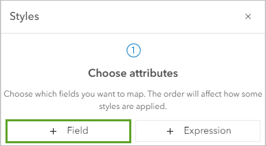

Lab No 2: Create a Map Lab
This tutorial is inspired from ArcGIS Online Learning resources available at:
https://learn.arcgis.com/en/projects/create-a-map/
Objective: The idea of this tutorial is you learn how to create a web map using ArcGIS Online, Add a data layer to a new map and start visualizing patterns. You will see how to add new data from external sources, format your charts, and then be able to filter and structure your map to only read and illustrate what you need.
Estimated time of completion: 45 Minutes
Download and Examine the Data
First, you will download a .csv file that contains general information about public high schools in Detroit, Michigan.
Download the DetroitSchoolCharacteristics.csv file to your computer and open it in Microsoft Excel or another spreadsheet program like Google Sheets.
You will see a table with columns of longitude, latitude, school name, total students eligible for free and reduced meal plans, and race and ethnicity data. This data comes from the National Center for Education Statistics’ (NCES) Education Demographic and Geographic Estimate (EDGE) program.
It’s hard to visualize where these schools are located or any patterns in the information from the table alone. Making a map is a better way to understand your data than viewing it as a table, so that’s your next task.
Note: You can find data about public schools across the United States in the Public School Characteristics - Current layer.
- Close the .csv file.
Create a Map Layer
Layers are the way geographic data is organized and combined to create maps. For example, a map may consist of a roads layer, a lakes layer, and buildings layer. These layers are also the basis for geographic analysis to aid in decision making. You will create a map layer by adding your .csv file to an empty map.
Sign in to your ArcGIS account using your university credentials.
On the ribbon, click the Map tab.
In Map Viewer, in the Layers pane, click the arrow next to the Add button and click Add layer from file.
The Add Layer window appears.
- Drag the DetroitSchoolCharacteristics.csv file to the Add Layer window.
Tip: Alternatively, click Your device and browse to the .csv file.
- For How would you like to add this file, choose Create a hosted feature layer and add it to the map. Click Next.
A list of fields appears. Map layers consist of spatial and tabular information. The table will contain the same columns—also called fields or attributes—as the .csv file. On this page, you can choose which fields from the .csv file you want to include, provide display names, and data type information.
The software automatically detected the fields and produced default display name and data types. This page is an opportunity for you to review that the automatic assignments are accurate.
In this example, you will choose to include all the fields, so you won’t adjust the check boxes.
Display name sets a nickname or shortened name of the field name that is more readily understandable to others. Field names cannot include spaces or numbers, so sometimes you may want these in the display name. Setting Display name allows you to provide meaningful names without changing the Field name text.
Type describes the data you will store in the field: - Date—Date and time. - Double—Numbers with decimal places. - Integer—Whole numbers from -2,147,483,648 to 2,147,483,647 (long integer). - Big Integer—Whole numbers between -(2^53) and 2^53. - String—Any sequence of characters. The default length is 256 characters.
You will accept all the default settings and continue.
- Click Next.
The Location settings page appears. Spatial information for the layer will be derived from the Latitude and Longitude columns in the .csv file.
Note: If your table contains the names or addresses of locations (like Paris or 15 Central St. Bethlehem, PA) instead of latitude and longitude fields, try this tutorial about geocoding data: Convert a list of historic places into a map.
Click Next.
For Title, type “Detroit high schools” followed by your name or initials (for example “Detroit high school (Your name)”).
Note: You cannot create two layers in an ArcGIS organization with the same name. Adding your initials to a layer name ensures that other people in your organization can also complete this tutorial. Once a layer has been created, you can rename it in the map to remove your initials, which will not affect the name of the underlying data layer.
- Click Create and add to map.
The new layer appears on the map. The map displays the locations of the schools listed in the .csv file. Each school is considered a feature in the layer. You have access to the descriptive information, or attributes, by viewing pop-ups for features on the map.
- On the map, click any circle.
A pop-up window appears with information about the school from the layer’s table.
Close the pop-up.
Before you continue, you will save the map.
In the Contents pane, click Save and open and click Save as.
In the Save map window, enter the following:
For Title, type “Public high schools in Detroit”.
For Summary, type “Map of public high schools and student body race and ethnicity data in Detroit, Michigan”.
Click Save.
Change the Basemap and Layer Style
Maps in ArcGIS Online consist of layers. You added the Detroit high schools layer, but the map also has a basemap layer by default. Next, you’ll change the basemap layer and the style of the feature layer.
On the Contents (dark) toolbar, click Basemap.
The Basemap pane appears. The Topographic basemap is selected. This basemap looks good but is better suited for a reference map. You’ll choose a more minimally designed basemap so it does not distract from the school data.
- In the Basemap pane, click Light Gray Canvas. Close the Basemap pane.
Note: You may see different basemaps depending on the configuration of your organization. If the Light Gray Canvas basemap is not available, skip to the next step without changing the basemap.
Next, you’ll configure the high school layer’s symbols so they are sized based on the number of students at each school eligible for free and reduced meal plan programs.
- On the Settings (light) toolbar, click Styles.
Note: If the Settings toolbar is unavailable, on the Contents toolbar, click Layers. In the Layers pane, click Detroit high schools to select the layer.
The Styles pane appears. Currently, the style is based on the data’s location only. You’ll configure the symbols to convey both location and one of the data’s attributes.
In the Styles pane, click the Field button.

You will choose to style the map by the number of students at each high school who are eligible for free and reduced price meal (FRPM).
Eligibility for FRPM is set by U.S. Department of Agriculture Child Nutrition Programs and is based on Federal poverty guidelines issued by the Department of Health and Human Services. The number or percent of students eligible for FRPM is often used as an equity indicator to understand the needs of school-aged children.
- On the Select fields menu, choose Total of free lunch and reduced-price lunch eligible and click Add.
The options under Pick a style update to reflect choices that are suitable for the Total of free lunch and reduced price lunch eligible field. Counts and Amounts (size) is selected and the map updates to reflect this style. This style reveals some new patterns in the data. The larger the circle, the more students are eligible for FRPM at the school.
On the Counts and Amounts (Size) card, click Style options.
In the Counts and Amounts (size) pane, for Symbol style, click the current symbol.
The Symbol style window appears. You’ll adjust the symbol’s properties so circles can be seen even when they are overlapping.
Set Fill transparency to 25. Set Outline transparency to 0.
The symbols on the map update. It is now easier to see overlapping circles.
In the Symbol style window, for Fill color, click the current color. In the Select color window, for #, type 0070FF and press Enter.
The color of the map symbols changes to blue.
Click Done in the Select color window, the Style options pane, and the Styles pane.
The map shows the number of students at each high school who are eligible for FRPM programs. The schools with more students who are eligible for FRPM programs are represented by larger circles. Schools represented with smaller circles have fewer students who are eligible for FRPM programs.
- On the Contents pane, click Save and open and click Save to save your map.
Configure Pop-ups and View a Table
The pop-up that you viewed earlier displayed all the attributes for the features, which may be unnecessary for your map. You can configure pop-ups to show only those attributes that are important to your map. In this example, you want to show only the name of the school and the number of students eligible for FRPM programs.
In the Layers pane, ensure that the Detroit high schools layer is selected.
On the Settings toolbar, click Pop-ups.
The Pop-ups pane appears and a sample pop-up appears on the map. The pop-up’s title contains the name of the layer and the name of the school. This title is unnecessary for your map, so you’ll remove it.
In the Pop-ups pane, click Title. Erase the text in the box.
The title text disappears from the sample pop-up. You’ll replace the list of fields with a sentence that includes the relevant information.
Next to Fields list, click the Options button. Click Delete.
Click Add content and click Text.
In the text editing window, type {. In the menu that appears, scroll almost to the bottom and click School name.
The School_name field was one of the fields in the .csv file you used to create the feature layer. By setting the dynamic text to this field, the pop-up that displays for each school point will display the corresponding School_name field.
- After {School_name}, type enrolled {Total_elementary_secondary_stud} students during the 2019-2020 school year.
You can add fields by typing their names inside of curly brackets or by choosing them from the list that appears when you type a curly bracket.
Press Enter to start a new paragraph. Type {Total_of_free_lunch_and_reduced} of those students were eligible for the free and reduced meal plan program.
Use the Bold button on the toolbar to add bold formatting to {School_name}, {Total_elementary_secondary_stud}, and {Total_of_free_lunch_and_reduced}.
Click OK.
The preview pop-up replaces the field names with the attribute values of one of the features.
All the fields still exist in the data table, but they don’t display in the pop-up. You can modify the contents of the pop-up at any time. You can still see all the attributes by showing the table.
In the Layers pane, next to Detroit high schools, click the Options button. Click Show table.
The layer’s table appears below the map.
Review the data in the table. Close the table when you are finished.
Close the Pop-ups pane.
Save the map.
Style the Layer in Another Way
Your goal is to identify which schools would most benefit from more after-school programs. You have styled the school data by the number of students eligible for FRPM. But there are other aspects of equity that are also important to consider. Due to historic and present-day practices, race and ethnicity can play a critical role in how many resources and opportunities students have at their schools. Practices like segregation in schools and neighborhoods have widened inequities in resource allocation to schools.
Next, you will style the schools to show the race and ethnicity of the student body. First, you will rename the layer you had previously styled to show FRPM eligibility.
In the Layers pane, for the Detroit high schools layer, click the Options button and click Rename.
For Title, type Students FRPM eligible and click OK.
Next, you will make a copy of the layer.
For the Students FRPM eligible layer, click the Options button and click Duplicate.
Rename the copied layer to be Race and ethnicity data.
Next to Students FRPM eligible, click the Visibility button to hide the layer on the map.
Next, you will style the Race and ethnicity data layer with race and ethnicity attributes.
Ensure that the Race and ethnicity data layer is selected in the Layers pane. In the Styles pane, remove the Total FRPM eligible attribute.
Click the Field button.
In the Add fields window, check the following fields:
All students - American Indian/Alaska Native
All students - Asian
All Students - Black or African American
All Students - Native Hawai’ian or Other Pacific Islander
All Students - Hispanic
All Students - Two or More Races
All Students - White
Click Add.
Under Pick a style, click the Charts and Size style.
The layer style updates.
The map now shows pie charts of the student body’s race and ethnicity categories. The sizes of the pie charts represent the number of students at the schools.
- Save the map.
Update the Item Details
Your map now tells a story about the locations and some socioeconomic attributes of public high schools. For example, the school with the largest number of students eligible for FRPM programs is Western International High School in southwest Detroit. Many of the schools have a high percentage of students who identify as Black or African American. In southwest Detroit, there are more schools with higher percentages of Hispanic or Latino students.
By saving your map, you also created a corresponding item page that contains information, actions, options, and settings for the map.
On the Contents toolbar, click Map properties. In the Map Properties pane, click Item details.
Your map’s item page opens in a new browser tab. The item details are missing important attribution and descriptive information that you will fill in before you share the map. For example, you must give credit to the data providers.
Scroll to the bottom of the page. Next to Credits (Attribution), click Edit.
Type National Center for Education Statistics’ (NCES) Education Demographic and Geographic Estimates (EDGE). Click Save.
Close the item page’s tab.
Submit Your Work
To demonstrate completion of this lab, take a screenshot that includes your entire computer screen showing your completed map. Ensure that the date and time are visible on your screen (either in the system taskbar or by opening the system clock). This screenshot will allow the instructor to validate that you have successfully completed the mapping exercise.
Submit your screenshot through the designated course submission portal.
What’s Next?
You have created a web map with a .csv file of school location and demographic data. Now that you have the data mapped, you have more ideas for how to share and explore potential after-school program needs in your city.
You can create a web app to display your map data in an interactive way so viewers can explore the data without editing the map. There are many ways you can use your web map to visualize data, understand problems, determine informed solutions, and discover what else is possible.
You can find more tutorials in the tutorial gallery.